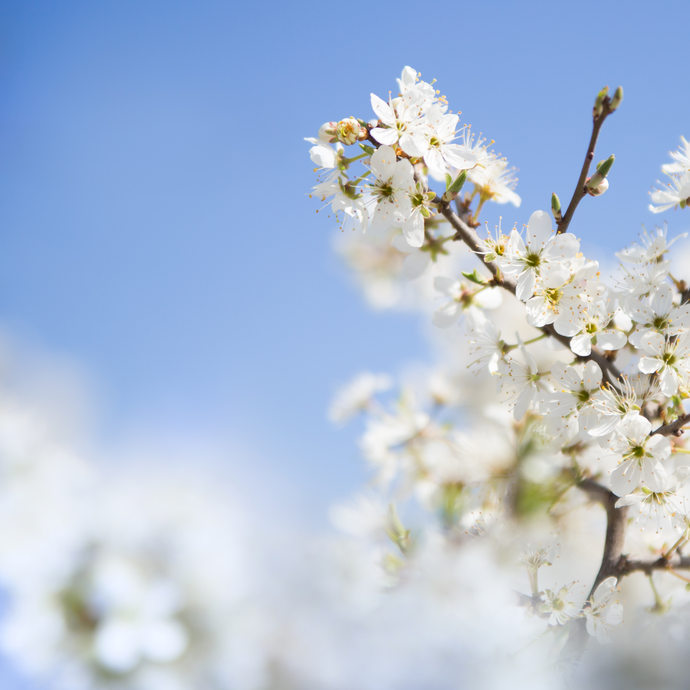
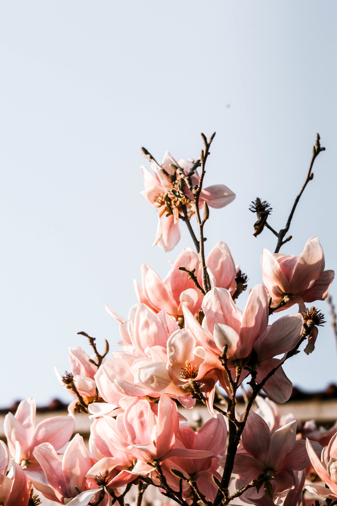
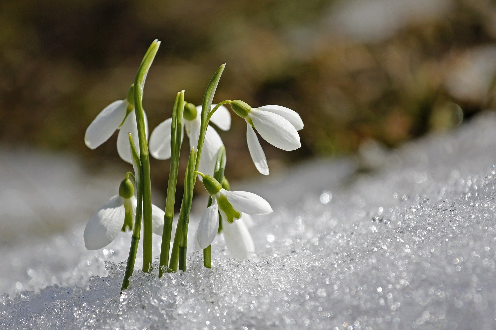

Весна – сколько надежд,
мечтаний о новых чувствах,
новых встречах и открытиях
готовит нам это время года!
В стихах про весну столько
красок и свежести – учим их
наизусть вместе с детьми и радуем родных!
| март | 31 |
| апрель | 30 |
| май | 31 |


